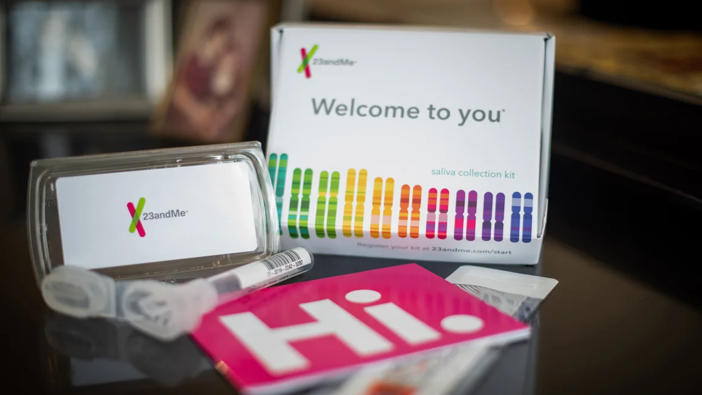

23andMe i krise - Frykt for misbruk av genetiske data
Det populære gentestingsselskapet 23andMe har erklært seg konkurs og søker nå en kjøper, noe som har vekket bekymring blant både kunder og forbrukeradvokater. Med over 15 millioner brukere står selskapets enorme database med genetisk informasjon nå i fare for å havne i nye hender.
Tiffany Hagler-Geard/Bloomberg/Getty Images
Privatlivets grenser utfordres
23andMe har forsikret brukerne om at selskapets personvernpolicy fortsatt gjelder, og at ingen identifiserbare genetiske data vil bli solgt uten samtykke. Styreleder Mark Jensen understreker at datahåndtering vil være en sentral faktor i enhver potensiell transaksjon. Likevel frykter eksperter at nye eiere kan endre policyen og åpne for mer omfattende deling av data.
“Det finnes helseforsikringsselskaper og livsforsikringsselskaper som er svært interessert i denne typen data,” sa Californias justisminister Rob Bonta til ABC News7. Han har nylig oppfordret brukere til å vurdere å slette sine kontoer for å beskytte sine personlige opplysninger.
Eksperter advarer om fremtidig risiko
Anya Prince, professor i jus ved University of Iowa, påpeker at selv om amerikansk lovgivning - som Genetic Information Nondiscrimination Act - beskytter mot diskriminering basert på genetiske data i enkelte sektorer, er den langt fra vanntett. Livsforsikringsselskaper og andre private aktører står fritt til å bruke slike data for egne formål, dersom de får tilgang til dem.
DNA-informasjon kan også ha utilsiktede konsekvenser. I tillegg til helseprediksjoner har genetiske databaser tidligere blitt brukt av politimyndigheter for å oppklare kriminelle saker, en praksis som har utløst debatt om personvern og etikk.
Hvordan slette din 23andMe-konto
Forbrukeradvokater anbefaler brukere som ønsker å beskytte sitt privatliv, å slette sine data fra 23andMe så raskt som mulig. For å gjøre dette, må man:
- Logge inn på sin 23andMe-konto.
- Gå til "Innstillinger" i sin profil.
- Klikke på "23andMe Data" og deretter "Vis".
- Laste ned sin genetiske data for eget bruk om ønskelig.
- Rulle ned til "Slett data" og klikke på "Slett permanent".
Dersom man tidligere har gitt samtykke til at spyttprøver beholdes av 23andMe, kan man også be om at disse destrueres under "Preferanser" på kontoen. I tillegg kan man trekke tilbake sitt samtykke til at genetiske opplysninger deles med tredjeparter.
Bekymring for tekniske problemer
Flere brukere har rapportert om tekniske problemer når de prøver å slette sine data. Justisminister Bonta selv har opplevd at nettsiden var nede ved flere anledninger, trolig på grunn av høy pågang fra brukere som ønsker å slette sine kontoer.
Med 23andMe på vei mot en mulig oppkjøp, gjenstår det å se hvordan nye eiere vil håndtere selskapets omfattende genetiske database. Inntil videre oppfordres kunder til å ta forholdsregler for å beskytte sitt personvern.